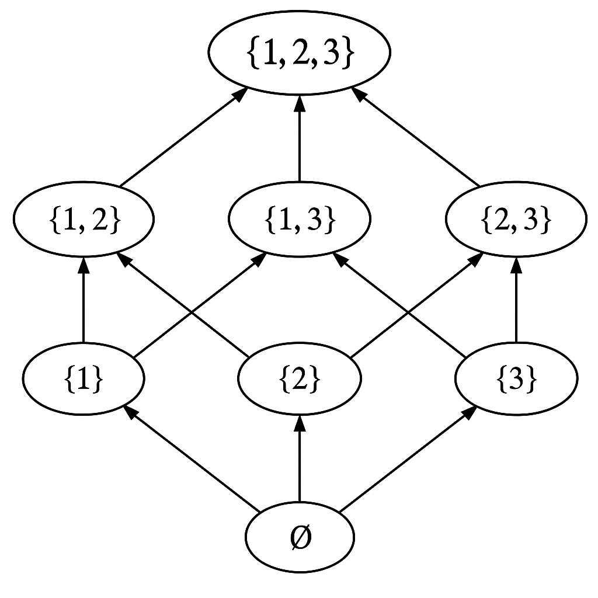
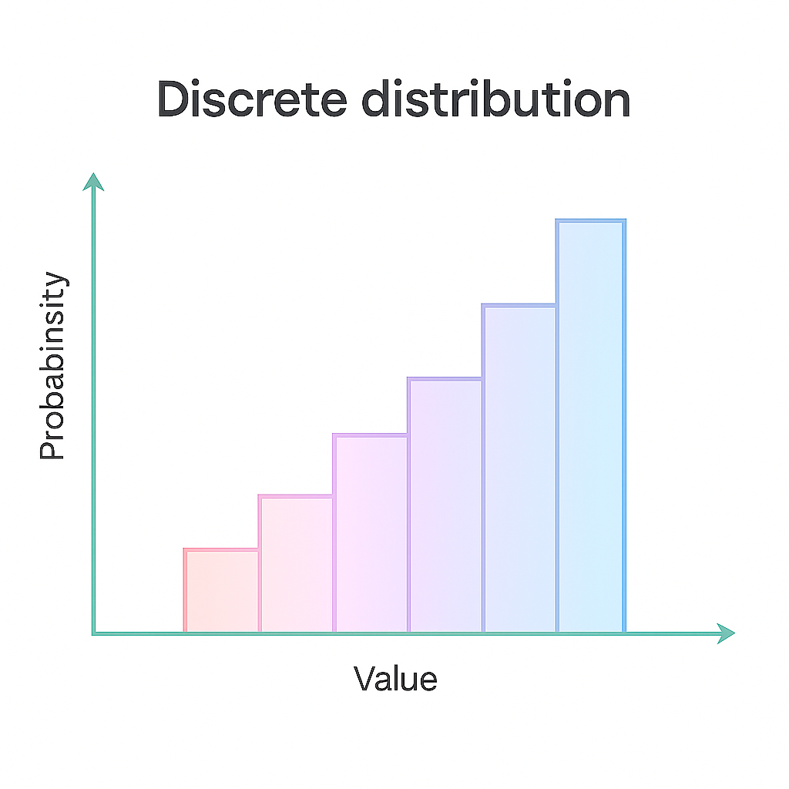
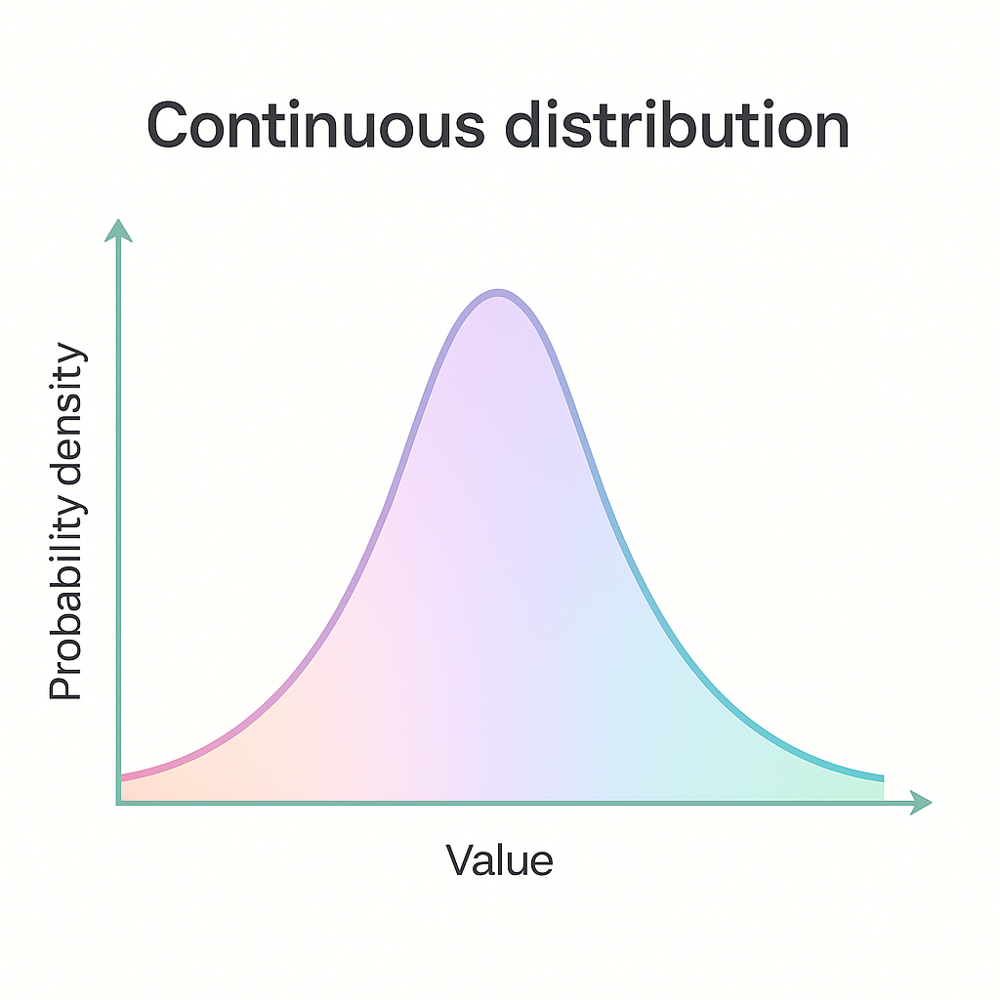

Fundamentos de probabilidad#
1.1. Introducción#
Antes de sumergirnos en el mundo de los modelos gráficos probabilísticos, comprendamos primero algunos de los fundamentos de la teoría de probabilidad, ya que constituye la base formal para este enfoque.
Una forma de visualizar su importancia es observando cómo diferentes perspectivas epistemológicas y metodológicas dan lugar a distintos tipos de modelado. En la Figura 1, se muestra una distinción entre dos enfoques principales:
El enfoque determinista, que se basa en el modelado no probabilísta y utiliza métodos donde no interviene el azar.
El enfoque estocástico, que recurre al modelado probabilísta y se sustenta formalmente en la teoría de probabilidad.
Ambos caminos convergen en aplicaciones prácticas como los modelos de aprendizaje automático (ML) y aprendizaje profundo (DL). Estos modelos pueden surgir tanto desde una perspectiva determinista como estocástica, aunque es en el enfoque probabilístico donde encontramos herramientas más directas para representar la incertidumbre y tomas decisiones informadas.

Figura 1. Elaboración propia.
1.2. Fundamentos de la teoría de probabilidad#
La teoría de probabilidad nos permite modelar incertidumbre mediante una estructura matemática compuesta por tres elementos: un espacio muestral \(\Omega\), un sistema de eventos medibles \(S\) y una función de probabilidad \(\mathbb{P}\). Formalmente, esta estructura se expresa como la triple:
A continuación, desglosamos cada uno de estos componentes:
1.2.1. Espacio muestral \((\Omega)\)#
El espacio muestral es el conjunto que contiene todos los posibles resultados de un experimento aleatorio. Se denota por:
Representa todo lo que puede pasar.
Es el punto de partida para definir eventos.
Ejemplo
Si lanzamos un dado de 6 caras, el espacio muestral es:
\(\Omega = \{1, 2, 3, 4, 5, 6\}\)
Puedes consultar más aquí
1.2.2. Conjunto potencia \(\mathcal{P}(\Omega)\)#
Es el conjunto de todos los subconjuntos posibles de \(\Omega\).
Incluye desde el conjunto vacío \(\varnothing\) hasta el conjunto total \(\Omega\).
Representa todas las combinaciones posibles de eventos.
Ejemplo
Si \(\Omega={1,2,3}\), entonces:
\(P(\Omega) = \{\varnothing, \{1\}, \{2\}, \{3\}, \{1,2\}, \{1,3\}, \{2,3\}, \{1,2,3\}\}\)
A continuación, podemos ver el conjunto potencia en la Figura 2, representado mediante un diagrama de Hasse.

Figura 2. Diagrama de Hasse del conjunto potencia de \({1,2,3}\). Elaboración propia con base en: Power set.
Puedes consultar más aquí.
1.2.3. σ-álgebra \((S)\) o espacio de eventos#
Es una colección especial de subconjuntos de \(\Omega\) (es decir, una subcolección de \(\mathcal{P}(\Omega)\)) que cumple con tres propiedades clave:
Propiedades del sistema de eventos \(S\)
Contiene el evento vacío y el evento total
\(\varnothing \in S\): representa el evento que nunca ocurre.
\(\Omega \in S\): representa el evento que siempre ocurre.
Cerrado bajo unión Si \(\alpha, \beta \in S\), entonces \(\alpha \cup \beta \in S\). Esto permite formar eventos como “ocurre \(\alpha\) o \(\beta\)”.
Cerrado bajo complemento Si \(\alpha \in S\), entonces \(\Omega - \alpha \in S\) (también denotado \(\alpha^c\)). Esto garantiza que también podamos trabajar con el evento “no ocurre \(\alpha\)”.
Ejemplo
Si \(\Omega={1,2,3}\), una posible σ-álgebra es:
Aquí, \(\{2,3\}\) es el complemento de \(\{1\}\), y viceversa.
Puedes consultar más aquí.
1.2.4. Función de probabilidad#
Hasta ahora hemos definido el espacio muestral \((\Omega)\), que contiene todos los posibles resultados de un experimento, y una σ-álgebra \((S)\), que representa los subconjuntos medibles de \((\Omega)\), es decir, los eventos a los que podemos asignar una probabilidad coherente.
Una función de probabilidad es una regla matemática que asigna a cada evento medible un número entre \(0\) y \(1\), representando cuán probable es que ese evento ocurra. Formalmente:
o
Para que esta asignación tenga sentido y sea consistente con la intuición, la función \(\mathbb{P}\) debe cumplir tres condiciones fundamentales, conocidas como los axiomas de Kolmogórov:
Definición formal
Una función \(\mathbb{P}\) es una probabilidad sobre el espacio \((\Omega, S)\) si cumple:
No negatividad: \(\mathbb{P}(A) \geq 0\) para todo \(A \in S\)
Normalización: \(\mathbb{P}(\Omega) = 1\)
Aditividad numerable: si tienes una colección infinita de eventos \((A_1, A_2, A_3, \ldots)\) que son mutuamente excluyentes (es decir, no se superponen, o sea, \((A_i \cap A_j = \emptyset)\) si \(( i \ne j )\)), entonces la probabilidad de que ocurra alguno de esos eventos (la unión de todos ellos) es igual a la suma de las probabilidades individuales.
Esto garantiza que la probabilidad se comporta de manera coherente incluso cuando se trata de infinitas situaciones posibles, no solo finitas. Es una característica esencial para que una función se considere una medida de probabilidad en teoría de la medida.
📌 Nota: Estos tres principios consolidan la probabilidad como una rama formal de la matemática, basada en la teoría de conjuntos y la teoría de la medida.
Evento en teoría de probabilidad
En teoría de probabilidad, un evento es cualquier subconjunto del espacio muestral \(\Omega\) que pertenece a la σ-álgebra \((S)\). Solo a estos eventos se les puede asignar una probabilidad formalmente válida. Por eso también se les llama eventos medibles.
¿Cómo se relacionan los conceptos que hemos visto?#
Para construir un modelo probabilístico sólido, necesitamos entender cómo se relacionan tres objetos fundamentales: el espacio muestral, el conjunto potencia y la σ-álgebra.
El espacio muestral \(\Omega\) es el punto de partida: contiene todos los posibles resultados de un experimento.
A partir de él, podemos formar el conjunto potencia \(\mathcal{P}(\Omega)\), que incluye todos los subconjuntos posibles de \(\Omega\). En principio, cada uno de estos subconjuntos podría considerarse un evento.
Sin embargo, no todos los subconjuntos de \(\Omega\) pueden ser tratados como eventos válidos desde el punto de vista de la probabilidad. Para que un subconjunto sea un evento medible, debe pertenecer a una σ-álgebra \(S \subseteq \mathcal{P}(\Omega)\), la cual cumple ciertas propiedades de consistencia lógica (como estar cerrada bajo unión, complemento, etc.).
Podemos resumir estas diferencias clave en la siguiente tabla:
Concepto |
Qué representa |
Contenido |
|---|---|---|
Espacio muestral \((\Omega)\) |
Resultados posibles de un experimento |
Un conjunto base (como \(\{1,2,3\})\) |
Conjunto potencia \(\mathcal{P}(\Omega)\) |
Todos los subconjuntos posibles de \((\Omega)\) |
Todos los eventos posibles, medibles o no |
\(\sigma\)-álgebra \((S)\) |
Subconjuntos medibles de \((\Omega)\) |
Subconjuntos que cumplen ciertas propiedades |
La siguiente Figura 2 ilustra visualmente cómo se relacionan estos tres niveles de generalidad:

Figura 2. Relación entre espacio muestral, conjunto potencia y \(\sigma\)-álgebra. Elaboración propia.
1.2.5. Distribución de probabilidad#
Una vez definida la función de probabilidad \(\mathbb{P}\), podemos describir cómo se reparte esa probabilidad entre los posibles resultados de un experimento. A esto lo llamamos distribución de probabilidad.
Dependiendo del tipo de espacio muestral, la distribución puede tomar dos formas principales:
1.2.5.1. Distribuciones discretas#

Este tipo de distribución se utiliza cuando el espacio muestral \(\Omega\) es finito o numerable (como lanzar un dado o una moneda).
Asignan una probabilidad explícita a cada valor individual de la variable aleatoria:
Ejemplo
Supongamos que lanzamos un dado justo. Entonces \(\Omega = \{1, 2, 3, 4, 5, 6\}\) y usamos \(\mathcal{P}(\Omega)\) como \(\sigma\)-álgebra.
Definimos la probabilidad como:
Así, por ejemplo:
\(\mathbb{P}(\{2,4,6\}) = \frac{3}{6} = 0.5\)
\(\mathbb{P}(\{1\}) = \frac{1}{6}\)
1.2.5.2. Distribuciones continuas#

Se definen sobre espacios infinitos (por ejemplo, \(\mathbb{R}\)). No asignan probabilidad a valores individuales, sino a intervalos, mediante una función de densidad \(f(x)\):
Ejemplo
La distribución normal (o gaussiana) tiene densidad:
Y cumple:
\(f(x) \geq 0\) para todo \(x\)
\(\int_{-\infty}^{\infty} f(x) \, dx = 1\)
💡 Nota: \(f(x)\) no representa una probabilidad directa, sino una densidad: la probabilidad de que \(X\) tome un valor exacto (como \(X = 0\)) es 0. Solo intervalos tienen probabilidad positiva.
Nota
Las distribuciones de probabilidad resumen toda la información necesaria para calcular eventos como: \(\mathbb{P}(X \in A)\), para cualquier conjunto medible \(A \in S\).
En el caso continuo, esto se hace mediante integrales sobre funciones de densidad.
En el caso discreto, mediante sumas de probabilidades individuales.
📌 Nota: Puedes explorar gráficamente las diferentes distribuciones en este recurso.